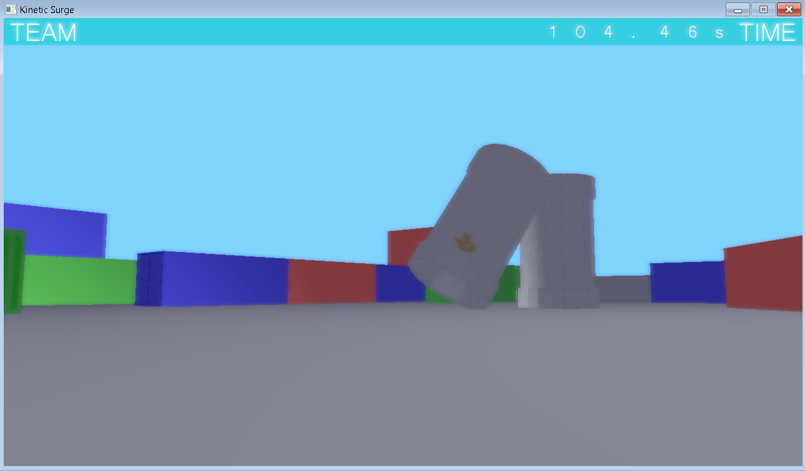
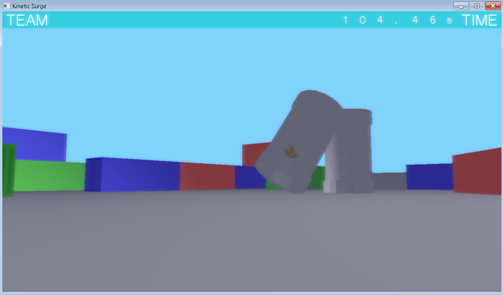

Kinetic Surge is a multiplayer game akin to tag where players take the role of either a Runner or a Seeker. The objective of the Runners is to evade capture long enough until the round timer runs out. If the Seekers catch the Runners, they join the Seekers to catch the remaining Runners. If the Seekers catch all the Runners before the time is up, the Seekers win. There are power-ups scattered around the levels that help the teams catch or outrun each other. The core features of this game are Maneuvering and Upgrading/Downgrading.
Team:
- Noel Eugenio - Programmer, Lead Artist
- Spencer Cheung - Project Manager, Code Reviewer, Sound Designer
- Jared Ritchie - Lead Programmer
- Mark Henry - Lead Level Designer, Programmer
- Ryan Yu - 3D Artist